ACTIVE LEARNING
Introduction:
Active learning is a special branch of machine
learning that falls under semi-supervised learning, wherein the machine
continuously interacts with an information source (oracle).
Most supervised machine learning models require
large amounts of data to be trained with for good results. Getting labeled data
is a difficult task. Considering the fact that data is abundantly available
now-a-days, it is still very costly and time inefficient to label the data.
Consider an image segmentation task, wherein we classify at the pixel level, it
is very difficult for a human to provide the amount of labeled data required by
a supervised model. What about we say we can achieve similar results
with less amount of labeling. This is when Active Learning comes into
picture.
Active Learning cleverly chooses the data
points it wants to label and train its model on those points, leading to
highest impact to training a supervised model. As we can see in Fig. 1,
that the model trains a binary classifier on the randomly chosen subset of
dataset, whereas Fig. 2 shoes the results of a model trained by running
an Active learner for choosing the points to be labeled. We can clearly see the
performance of both the models and infer that an active learning can help us
achieve good results with even a subset of labeled data points.
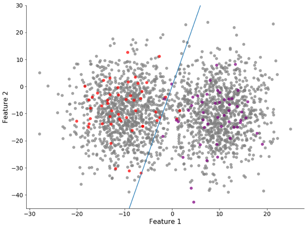 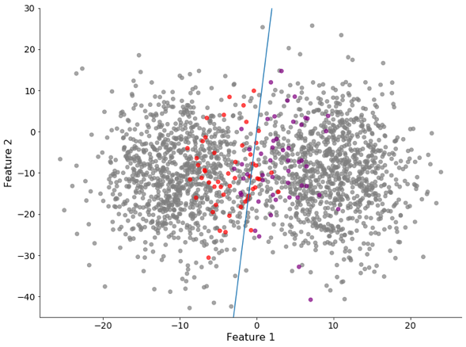
Fig. 1, Fig. 2
A traditional active learning algorithm may consist
of the following steps:
1.
Choose a small subsample of datapoints and label them manually.
2.
Train the model on the obtained labelled data.
3.
Run the model obtained in step 2 on all the unlabelled points and
determine a metric for each of those points and choose the most
appropriate points to label depending upon the metric score.
4.
Repeatedly iterate, back to step 2.
Implementation
details:
We have implemented an Active Learning
framework from scratch using basic Python libraries like NumPy and Pandas. The
model is completely generalized and can be used for a variety of datasets. The
model can be checked at the python notebooks attached along-with, which
demonstrate a stepwise procedure for the given approach, and also creates
analytic plots for comparison of the results.
Currently for the given problem, we have used “The
Digit Dataset” from sklearn to analyze the results. The dataset consists of
1797 8x8 images of handwritten digits which can be transformed to a feature
vector consisting of 64 features. The dataset is used for multi-class
classification of hand-written digits into 10 classes.
We have implemented all the given strategies
for active learning on the given datasets. We have implemented all the given
querying strategies for our active learner. Let us discuss the analysis step by
step as the problem statement unfolds.
We have used a 70-30 (can be modified from dataset.py)
train to test split of out data. We iteratively label unlabeled training data
and after training the model we check the accuracy on the test data.
For better visualization of the data, we have
performed PCA transform on our data whenever we plot it, otherwise for
comparisons, we consider all the dimensions.
Conversion of Problem:
Our first task is to convert the given
supervised learning problem, which is a multi-class classification problem,
into an Active learning problem. So, we randomly remove labels of 90% of the
data, and are just left with 10% of the points left with labels. Fig. 3
shows our original raw dataset, whereas Fig. 4 shows the labeled dataset
that we are left with after filtering.
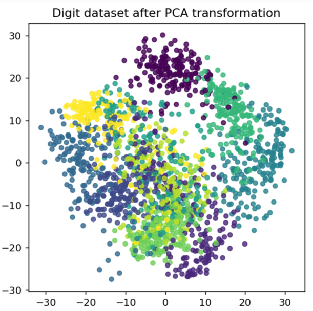 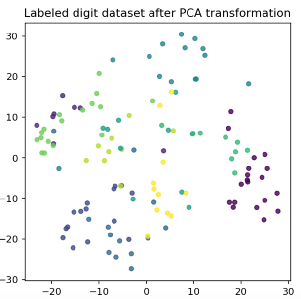
Fig. 3, Fig. 4
Then we have designed an Oracle (source:
oracle.py), which will act similar to a human oracle. An instance of the active
learner will query the Oracle, which has the labels for all the unlabeled data,
and would look up the dataset and return labels of the required instances.
Scenarios:
In active learning, there are typically two scenarios
or settings in which the learner will query the labels of instances. The main
scenarios that have been considered in the literature are:
· Pool-based sampling: This setting assumes that there is
a large pool of unlabeled data, from which we draw our queries.
Instances are drawn according to some informativeness measure, we describe in
the next section. This measure is applied to all the instances of the pool and
best instances are selected. In our case, the unlabeled images of digits will
be ranked and then the best instances will be selected and are queried to the Oracle.
Fig. 5 represents the Pool-based sampling approach in a systematic way.
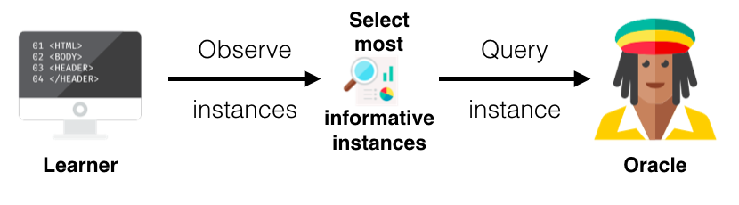
Fig. 5
· Stream-based selective sampling: This setting assumes that getting
unlabeled instance is free. So instead of the pooled strategy we applied in
pool-based sampling, here we select each unlabeled instance one at a time and
allow the learner to determine whether it wants to query the instance or not.
This decision will also be based on similar informativeness measure we
discussed about in the pool-based sampling. In our scenario, we will select one
image of digit, calculate the informativeness measure and determine if we want
to query that or not based on the threshold value of informativeness. Fig. 6
represents the Stream-based sampling approach in a systematic way.

Fig. 6
Now we discuss about the different
informativeness measures, and analyze their
performances on the 2 scenarios mentioned above.
Uncertainty Sampling:
When a Supervised Machine Learning model makes
a prediction, it often gives a confidence in that prediction. If the model is
uncertain (low confidence), then human feedback can help. Getting human
feedback when a model is uncertain is a type of Active Learning known as
Uncertainty Sampling. Uncertainty sampling consists of 3 different metrics
known as level of informativeness, so the model will get more
information about the data distribution if we choose the instance with highest
level of informativeness to be labeled and used for training. The 3 different
kinds of informativeness are as follows:
1. Least confidence: Difference between the most confident
prediction and 100% confidence.
Least confident
strategy only considers information about the most probable labels and does not
consider information about remaining label distribution. It is defined as,
Where U is the uncertainty
measure, x is the instance to be predicted, p is the most likely
prediction.
2. Margin Sampling: Difference in probability of the first and second
most likely prediction,
where M is the uncertainty metric, x1 and x2 are the most likely predictions.
3. Entropy based: Entropy based uncertainty sampling
revolves around minimizing the entropy for out model, where the entropy is
defined as,
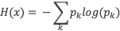
This is similar to the classification entropy we use to train our
classification models.
For pool-based
scenario, we took 3 different learner (source: active_learning.py)
instances, one for each of the 3 uncertainty metrics and iterated over
labelling additional 10% data points in each step as mentioned in the problem.
We analysed accuracy on the test set (30 % of the raw data) for 10%, 20%, 30%
and 40% of labelled instances successively and obtained the following plots. We
used SVM classification for classifying our data at each iteration.
Initially 10% of the
instances are chosen along with the labels, which is taken to be common for all
the 3 strategies so that we get a uniform analysis. Fig. 7 shows the PCA
transformed plot of the test data, along with the prediction results in the
first iteration, which will be same for all the 3 informativeness measures.
Fig. 8 represents the test plot (PCA transformed) and its predictions after 4
successive queries for the 3 different measures, and accuracy is noted at each
iteration.
Fig.9 shows the
accuracy of the 3 different metrics and their comparison with randomly chosen
query points.
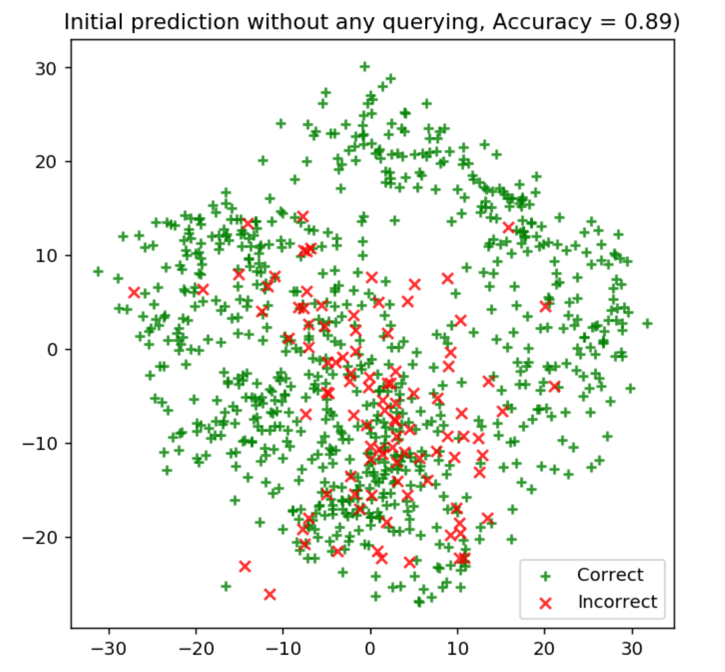
Fig. 7
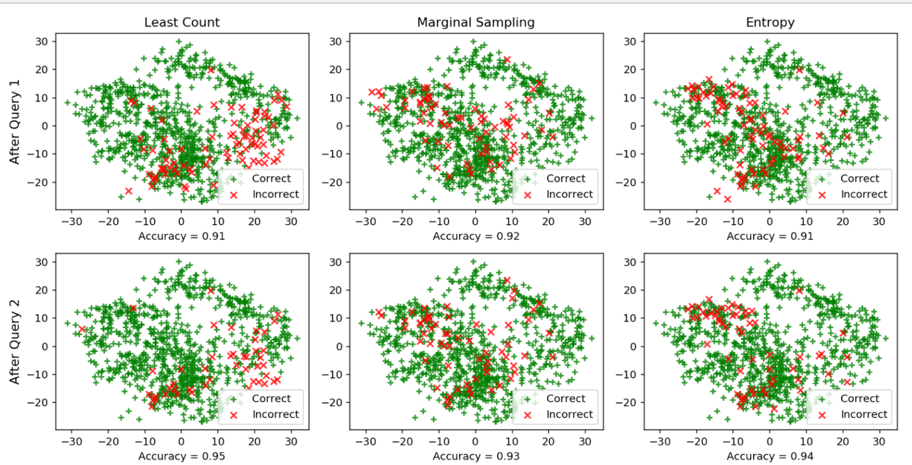
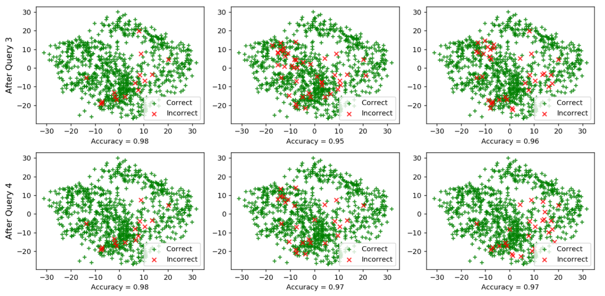
Fig. 8
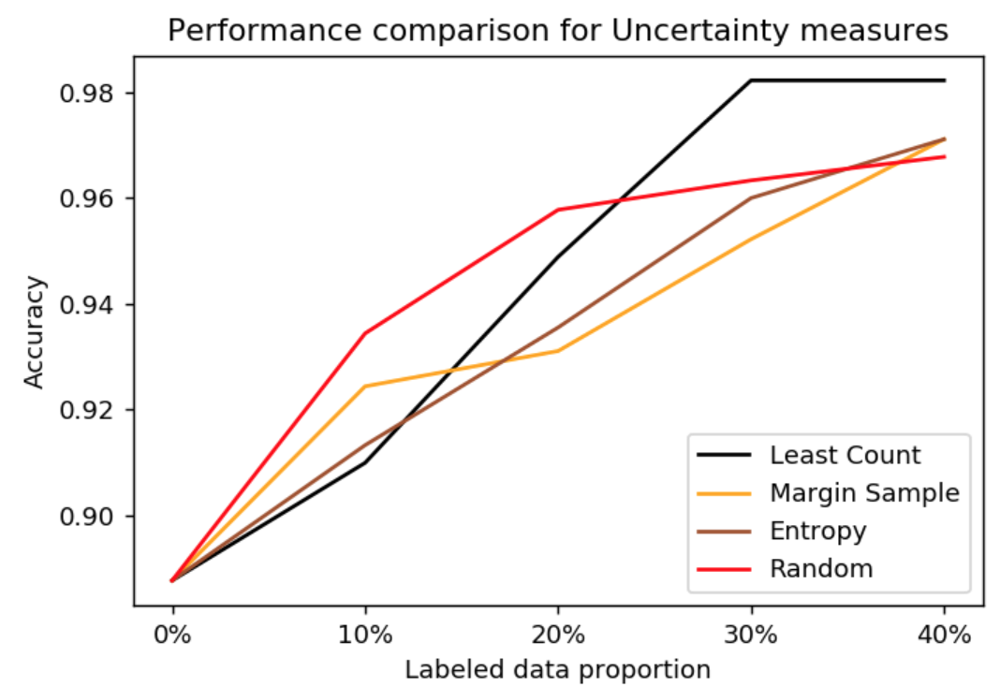
Fig. 9
After analysing the performances,
we notice that in pool based selection, least confidence measure is most
informative in our scenario. Also note that active learners are performing
better than random querying.
(Source for the above analysis: PoolBased_UncertaintySampling.ipynb)
For stream-based
scenario, we took 3 different learner (source: active_learning.py)
instances, one for each of the 3 uncertainty metrics and iterated over all the
unlabelled training instances, wherein we will calculate the informativeness.
If the instance passes the threshold, the instance is queried to the Oracle and
model is retrained on the obtained label. The following procedure is carried on
until we reach the minimum threshold of 97% accuracy. We used SVM
classification for classifying our data at each iteration.
Fig. 10 shows the PCA transformed plot of the test data, along with the
prediction results in the first iteration, which will be same for all the 3
informativeness measures.
Fig. 11 shows the plot for number of queries vs accuracy, First plot is for
least confidence, second is for margin sampling, the third for entropy based.
In each plot, random sample is being compared along with to visualize the
essence of active learner. It is clearly visible that the random sample takes
approximately over 180 queries to reach the 97% accuracy mark, whereas out
active learners are far more better, least confidence takes 51 queries, margin
sampling takes 25 queries, whereas entropy based sampling takes 99 queries to
pass the mark. We see here margin sampling out performs the other models in our
scenario.
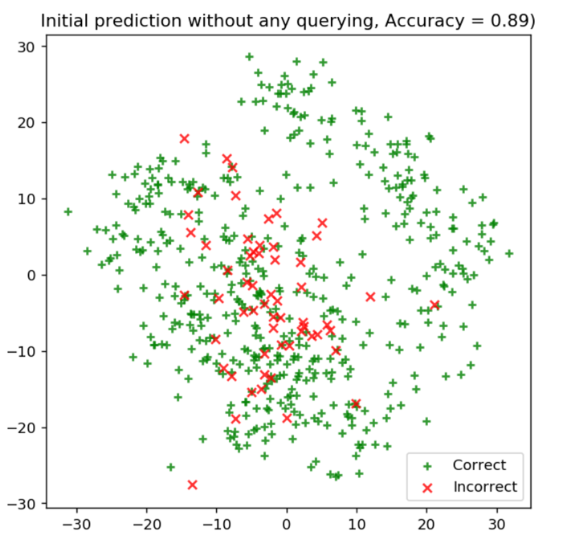
Fig. 10
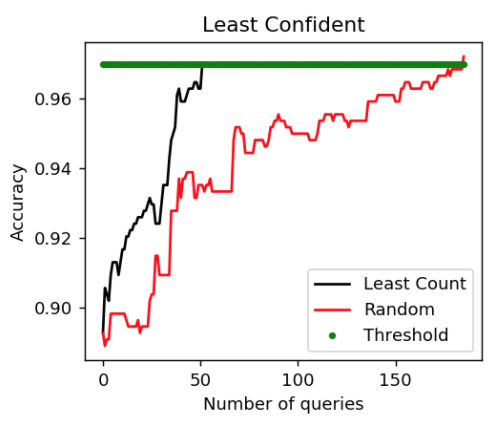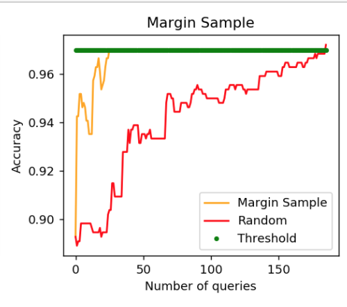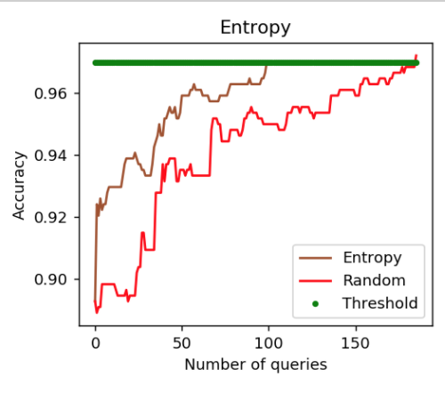
Fig. 11
(Source for the above analysis:
StreamBased_UncertaintySampling.ipynb)
Query by Committee (QBC)
The query by committee
based approach involves maintaining a committee of models, which are trained on
the current labelled data, even though they represent competing hypotheses.
Where k is the
committee size. Each committee member votes for every unlabelled instance.
The main idea behind
QBC is that it measures informativeness of the instances based on the
disagreement between the models. I.e. for an instance where the committee
members tend to disagree are more informative for the overall active learner.
We measure informativeness based on the following metrics:
· KL Divergence: It measures the divergence of the
model predictions. More the divergence between the models, more will be the
degree of disagreement. It is measured as follows:
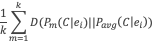
K: size of the committee and,
Here D(x||y), is an information
theoretic measure of the difference between 2 distributions,
So we measure informativeness
based on this metric.
· Vote Entropy: It measures disagreement using the
following metric,
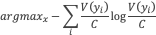
Query by committee
approach was studied for both these metrics, on pool-based and stream-based
scenarios.
For pool-based
scenario, we took 2 different learner (source: active_learning.py)
instances, one for each of the 2 disagreement metrics and iterated over
labelling additional 10% data points in each step as mentioned in the problem.
We analysed accuracy on the test set (30 % of the raw data) for 10%, 20%, 30%
and 40% of labelled instances successively and obtained the following plots. We
used SVM classification for classifying our data at each iteration.
Initially 10% of the
instances are chosen along with the labels, which is taken to be common for all
the 3 strategies so that we get a uniform analysis. Fig. 12 shows the
PCA transformed plot of the test data, along with the prediction results in the
first iteration, which will be same for all the methods.
Fig. 12 represents the test plot (PCA transformed) and its predictions after 4
successive queries for the 2 different metrics, and accuracy is noted at each
iteration.
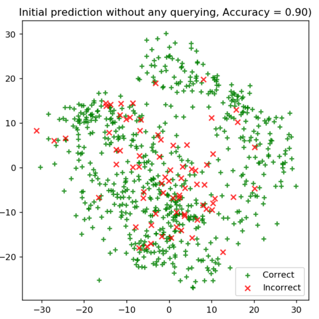
Fig. 12
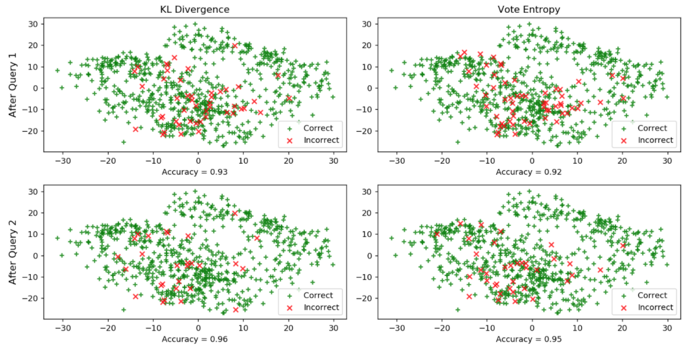
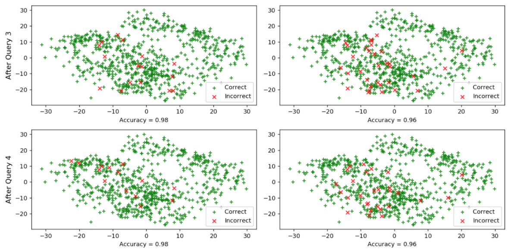
Fig. 13
Fig.14 shows the accuracy of the 3 different metrics and their comparison with
randomly chosen query points.
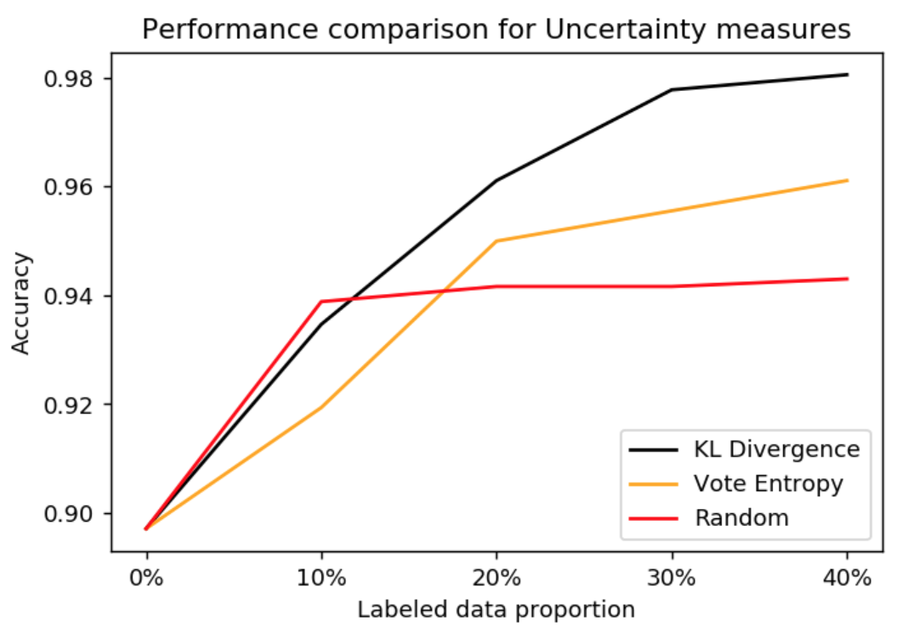
Fig. 14
As the performance plot (Fig. 14)
clearly shows that our active learners are better than the randomly chosen
points. One more important thing we note here is that KL Divergence performs
better than Vote Entropy. The disadvantage of Vote Entropy is that it does not
consider the committee members’ class distributions, Pm(C|ei)
we discussed in the definition above. (Source for the above analysis: PoolBased_QBC.ipynb)
For stream-based
scenario, we took 2 different learner (source: active_learning.py)
instances, one for each of the 2 uncertainty metrics and iterated over all the
unlabelled training instances, wherein we will calculate the informativeness.
If the instance passes the threshold, the instance is queried to the Oracle and
model is retrained on the obtained label. The following procedure is carried on
until we reach the minimum threshold of 95% accuracy. We used SVM
classification for classifying our data at each iteration.
Fig. 15 shows the PCA transformed plot of the test data, along with the
prediction results in the first iteration, which will be same for all the 2
disagreement measures.
Fig. 16, Fig 17 show the plot for number of queries vs accuracy, First plot is for KL Divergence,
second is for Vote Entropy. In both the plots, random sample is being compared
along with to visualize the essence of active learner. It is clearly visible
that the random sample takes approximately over 85 queries to reach the 95%
accuracy mark, whereas out active learners are far more better, KL Divergence
takes 50 queries, margin sampling takes 93 queries to pass the mark. We see
here KL Divergence out performs the other models in our scenario.
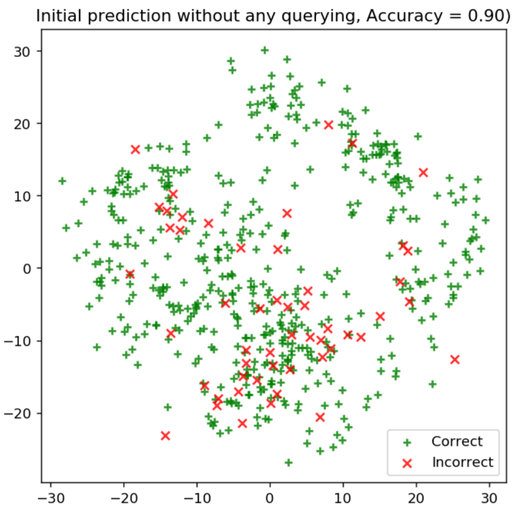
Fig. 15
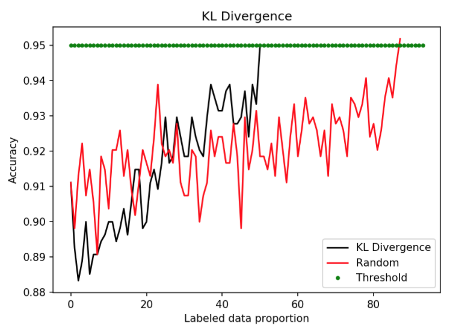
Fig. 16
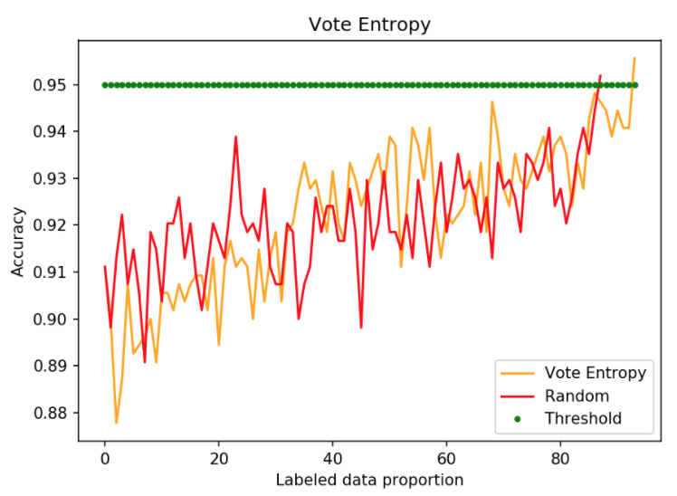
Fig. 17 (Source for the above analysis: StreamBased_QBC.ipynb)
Version Space
In active learning, we
define version space as the region that is still unknown to the overall model
class, which means that the models in our committee do not completely agree on
the data points lying in the version space. I.e. if 2 models of the same model
class but different parameter settings) agree on all the labelled data, but
disagree on some unlabelled instance, then that instance lies in the region of
uncertainty.
We take 5 different models and used KL
Divergence as out disagreement metric. We then define a threshold which will
help us determine whether a given point lies within the region of uncertainty.
For defining the version space, we have used
KL Divergence disagreement metric, we calculate KL Divergence for each of the
unlabeled instance and the ones having divergence greater than a chosen
threshold 0.4 (experimental) will have contradicting hypotheses and are
most likely to be in the region of uncertainty.
Table 1 shows the version space size at the
beginning of each iteration, wherein after each iteration we order the points
on the basis of KL Divergence and query them to the oracle. It is clearly
visible that the version space is steeply decreasing after each iteration.
Whereas, when we query the Oracle randomly, the version space size does not
decrease at a faster rate.
This help us infer that, query by committee
helps us decrease the version space size.
|
|
Version Space Size (KL Divergence) |
Random Querying |
|
Initial |
577 |
577 |
|
After query 1 |
376 |
453 |
|
After query 2 |
192 |
325 |
|
After query 3 |
102 |
211 |
Table 1
The implementation is also
incorporated in StreamBased_QBC.ipynb
Cluster-based Sampling
Cluster based sampling
process does not involve the concept of Oracle, that was use in the previous
discussed approaches. Rather, it uses an unsupervised approach (clustering) to
get the labels for supervised algorithms.
Steps involved:
1. Randomly sample 40% of the training points. (NOTE: here we didn’t take
labelled data in the beginning)
2. Perform k-means clustering on the obtained random sample, number of
clusters = 10 (it can be altered from dataset.py).
3. Randomly select 20% of the points from each cluster and get their
labels.
4. Using the label in majority, label all the points in the cluster.
This way, we can help
label 40% of the data using on 20% points of each cluster.
Fig. 18 shows the PCA transformed plots of the 40% points sampled from the 90%
unlabelled data.
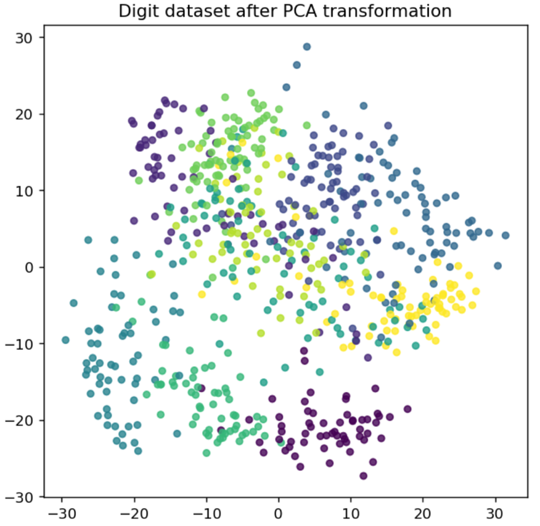
Fig. 18
Fig. 19 shows the PCA transform of the 40% points after performing clustering,
colour codes of the points represent cluster number.
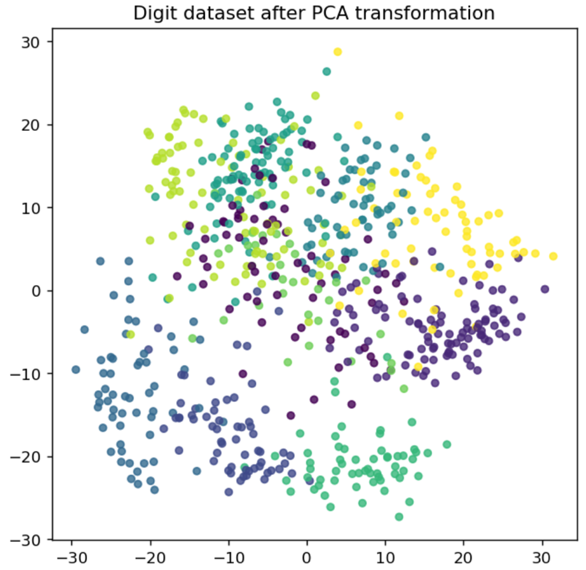
Fig. 19
Number of instances: 1797
Number of unlabelled
points: 1616
Number of points we
labelled: 131
The savings in cost:
1616 – 131 = 1485
Hence the model saves
1485 hours and Rs. 1,48,500.
Using the labels we
obtained using the above approach, we trained an SVM model and the predictions
are shown in Fig. 20,
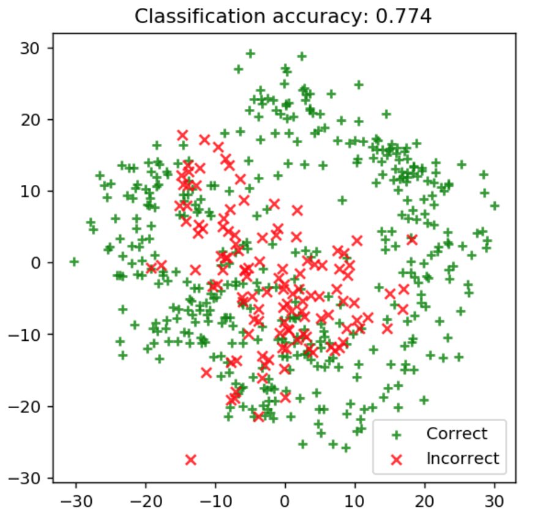
Fig. 20
Accuracy: 77.4%
It may be concluded
that the prediction of the above model is not as goog
as the sampling procedures we discussed before.